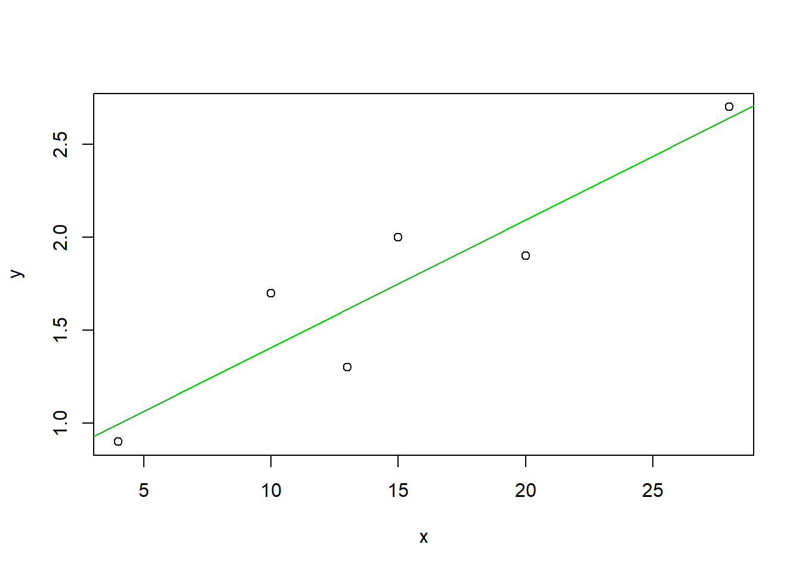

§ Chapter 5 Regression Analysis
5.1 Linear Regression
Data :【Modern Elementary Statistics (11th Edition): John E. Freund; p418; 16.7】
The following data show the average number of hours that six students spent on homework per week and their grade-point indexes for the courses they took in that semester:
x <- c(15, 28, 13, 20, 4, 10)
y <- c(2, 2.7, 1.3, 1.9, 0.9, 1.7)
summary(lm(y~1+x))##
## Call:
## lm(formula = y ~ 1 + x)
##
## Residuals:
## 1 2 3 4 5 6
## 0.25000 0.05814 -0.31279 -0.19302 -0.09535 0.29302
##
## Coefficients:
## Estimate Std. Error t value Pr(>|t|)
## (Intercept) 0.72093 0.24641 2.926 0.04300 *
## x 0.06860 0.01467 4.678 0.00946 **
## ---
## Signif. codes: 0 '***' 0.001 '**' 0.01 '*' 0.05 '.' 0.1 ' ' 1
##
## Residual standard error: 0.272 on 4 degrees of freedom
## Multiple R-squared: 0.8455, Adjusted R-squared: 0.8068
## F-statistic: 21.88 on 1 and 4 DF, p-value: 0.009461plot(x, y)
abline( lm(y~1+x), col=3)
The regression equation is \(Y=0.721+0.069x\)
- \(H_0\): \(\beta_1=0\)
\(H_A\): \(\beta_1\neq0\) - \(\alpha=0.01\)
- The value of the test statistic, \(t=4.698, p-value=0.009 < 0.01\). We conclude that \(\beta_1\neq0\) or there is a linear association between six students spent on homework per week and their grade-point indexes.
- By ANOVA table, since \(F=21.884, p-value=0.09 < 0.01\).We conclude that \(\beta_1\neq0\). This is the same result as when the t test. In simple linear regression. \(F=t^2 ; F(1-\alpha; 1, n-2)=[t(1-\alpha/2; n-2)]^2\)
5.2 Multiple Regression Analysis
Data :【Modern Elementary Statistics (11th Edition): John E. Freund; p424】
The following data show the number of bedrooms, the number of baths, and the prices at which eight one-family houses sold recently in a certain community:
mltireg <- data.frame(
x1 <- c(3, 2, 4, 2, 3, 2, 5, 4),
x2 <- c(2, 1, 3, 1, 2, 2, 3, 2),
y <- c(143800, 109300, 158800, 109200,
154700, 114900, 188400, 142900)
)
lm.m <- lm (y ~x1+x2, data=mltireg)
summary(lm.m)##
## Call:
## lm(formula = y ~ x1 + x2, data = mltireg)
##
## Residuals:
## 1 2 3 4 5 6 7 8
## 5644 -869 -7343 -969 16544 -6504 5505 -12008
##
## Coefficients:
## Estimate Std. Error t value Pr(>|t|)
## (Intercept) 65430 12134 5.392 0.00296 **
## x1 16752 6636 2.524 0.05288 .
## x2 11234 9885 1.137 0.30724
## ---
## Signif. codes: 0 '***' 0.001 '**' 0.01 '*' 0.05 '.' 0.1 ' ' 1
##
## Residual standard error: 10750 on 5 degrees of freedom
## Multiple R-squared: 0.8941, Adjusted R-squared: 0.8517
## F-statistic: 21.1 on 2 and 5 DF, p-value: 0.003653This tells us that (in the given community at the time the study was being made) each extra bedroom added on the average 16752, and each bath 11234,to the sales price of a house.
The regression equation is \(\hat{y}= 65430+16752x_1+11234x_2\)
5.3 Logistic Regression Anaylsis
Data: https://stats.idre.ucla.edu/r/dae/logit-regression/
Example 1: Suppose that we are interested in the factors that influence whether or not a political candidate wins an election. The outcome (response) variable is binary (0/1); win or lose. The predictor variables of interest are: the amount of money spent on the campaign, the amount of time spent campaigning negatively and whether or not the candidate is an incumbent. Because the response variable is binary we need to use a model that handles 0/1 variables correctly.
logit <- read.table("c://data/logit.txt", header=TRUE)
glm.logit <- glm(admit ~ gre+ topnotch+ gpa, family=binomial, data=logit)
summary(glm.logit)##
## Call:
## glm(formula = admit ~ gre + topnotch + gpa, family = binomial,
## data = logit)
##
## Deviance Residuals:
## Min 1Q Median 3Q Max
## -1.3905 -0.8836 -0.7137 1.2745 1.9572
##
## Coefficients:
## Estimate Std. Error z value Pr(>|z|)
## (Intercept) -4.600813 1.096379 -4.196 2.71e-05 ***
## gre 0.002477 0.001070 2.314 0.0207 *
## topnotch 0.437224 0.291853 1.498 0.1341
## gpa 0.667556 0.325259 2.052 0.0401 *
## ---
## Signif. codes: 0 '***' 0.001 '**' 0.01 '*' 0.05 '.' 0.1 ' ' 1
##
## (Dispersion parameter for binomial family taken to be 1)
##
## Null deviance: 499.98 on 399 degrees of freedom
## Residual deviance: 478.13 on 396 degrees of freedom
## AIC: 486.13
##
## Number of Fisher Scoring iterations: 4Both gre and gpa are statistically significant while topnotch is not. The interpretation of the coefficients can be awkward. For example, for a one unit increase in gpa, the log odds of being admitted to graduate school (versus not being admitted) increases by 0.668.
For this reason, many researchers prefer to exponentiate the coefficients and interpret them as odds-ratios. For example, we can say that for a one unit increase in gpa, the odds of being admitted to graduate school (versus not being admitted) increased by a factor of 1.949.
Since GRE scores do not increase by a single unit (they increase only in units of 10), a one unit increase is meaningless. We can take the odds ratio and raise it to the 10th power, e.g.\(1.002^{10}=1.020181\) , and say for a 10 unit increase in GRE score, the odds of admission to graduate school increased by a factor of 1.02.